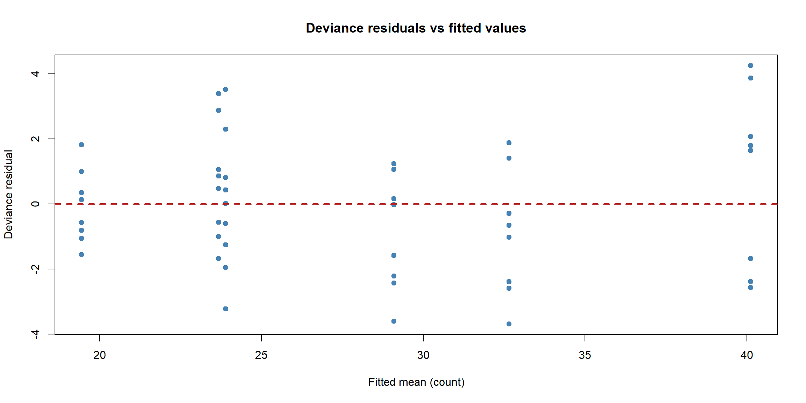

Code
```{r}
#| warning: false
#| message: false
model <- glm(breaks ~ wool + tension, data = warpbreaks, family = poisson)
```Fitting a GLM is one line; trusting it is the real work — exactly the lesson from the linear-modelling and frequentist sections, now in the GLM world. A linear model is judged by residual sums of squares and the four assumption plots; a GLM is judged by its close cousins, built from the deviance and the likelihood. This page gathers the tools that apply to every GLM: measuring fit, comparing models, and quantifying uncertainty.
We use the Poisson model of warpbreaks from the previous page as the running example.
A linear model measures lack of fit with the residual sum of squares. A GLM uses the deviance, defined from the log-likelihood as \[
D = 2\big[\,\ell_{\text{saturated}} - \ell_{\text{model}}\,\big],
\] the gap between your fitted model and a “perfect” saturated model that reproduces the data exactly. Smaller deviance means a better fit. Every glm reports two of them:
The drop from null to residual is how much your predictors explain — the GLM version of “explained variation.”
nullDeviance nullDf residualDeviance residualDf
297.3722 53.0000 210.3919 50.0000 Think of deviance as the GLM’s “leftover error”, playing the role the residual sum of squares plays for a linear model: smaller is better, and adding a useful predictor should make it drop. The null deviance is where you start (nothing but an average); the residual deviance is where your model gets to. A big drop means your predictors earned their place.
For a Poisson or binomial model (with reasonably large counts per row), a well-fitting model has a residual deviance roughly equal to its degrees of freedom. A residual deviance much larger than its df is the classic fingerprint of overdispersion or a missing predictor.
residualDeviance df ratio
210.391889 50.000000 4.207838 A ratio comfortably above 1 here echoes the overdispersion warning from the Poisson page — a reminder to check the variance assumption before believing the standard errors. (This deviance-based check and the Pearson dispersion estimate from the previous page tell the same story by slightly different routes.)
Raw residuals \(y_i - \hat\mu_i\) are not very useful for a GLM because the variance changes with the mean. Instead R gives two standardised kinds:

Read this like the linear-model residual plot: you want a structureless band around zero. Curved trends suggest the wrong link or a missing term; a funnel suggests the variance assumption is off (overdispersion again). Do not expect the tidy cloud of a linear model — for low counts the discreteness shows as stripes, which is normal.
GLM residual plots are lumpier than linear-model ones — counts and 0/1 outcomes are discrete, so residuals fall into bands and stripes. Don’t panic at the pattern itself; look for the trends (a slope or a curve) and fans (spreading variance) that signal a real problem.
To ask “do these extra predictors earn their place?”, compare two nested GLMs by how much the deviance drops. Because deviance is built from the log-likelihood, the drop is a likelihood-ratio test statistic — the very same idea (and the same \(\chi^2\) reference distribution, via Wilks’ theorem) as the likelihood-ratio test in the Frequentist section. anova() with test = "Chisq" does it.
Analysis of Deviance Table
Model 1: breaks ~ wool
Model 2: breaks ~ wool + tension
Resid. Df Resid. Dev Df Deviance Pr(>Chi)
1 52 281.33
2 50 210.39 2 70.942 3.938e-16 ***
---
Signif. codes: 0 '***' 0.001 '**' 0.01 '*' 0.05 '.' 0.1 ' ' 1The deviance drop from adding tension is tested against a \(\chi^2\) with degrees of freedom equal to the number of extra parameters. A small p-value says the larger model fits significantly better — tension belongs in the model. This is the GLM workhorse for testing whole groups of terms (e.g. all levels of a factor at once).
For comparing models that are not nested — different predictors, or a Poisson versus a negative binomial — the likelihood-ratio test does not apply, and we use the Akaike Information Criterion: \[ \text{AIC} = -2\,\ell(\hat\theta) + 2p, \] log-likelihood penalised by the number of parameters \(p\). It rewards fit and punishes complexity; lower is better.
The model with the lower AIC is preferred — here, confirming that the richer model is worth its extra parameters. AIC is the principled, automatic version of the principle of parsimony from the linear-modelling section.
Finally, uncertainty. R offers two flavours, the same pairing as the frequentist asymptotics page:
confint() — profile-likelihood intervals, which respect the true (possibly skewed) shape of the likelihood. Preferred for GLMs.confint.default() — fast Wald intervals (\(\hat\beta \pm 1.96\,\text{se}\)), which assume the likelihood is symmetric. 2.5 % 97.5 %
(Intercept) 36.6684652 43.8135426
woolB 0.7354572 0.9002669
tensionM 0.6441360 0.8158394
tensionH 0.5248964 0.6745203These are the interval companions to the rate ratios from the Poisson page — and being profile-based, they stay faithful to the likelihood even when it is asymmetric.
The one-call diagnostic suites that exist for linear models work for GLMs too: performance::check_model() produces a full panel of GLM-appropriate diagnostic plots, performance::check_overdispersion() runs a formal dispersion test, and DHARMa simulates scaled residuals that behave like uniform residuals for any GLM — the most reliable modern way to spot misfit, overdispersion and zero-inflation. broom::tidy(model, exponentiate = TRUE, conf.int = TRUE) returns all the rate/odds ratios and intervals as a tidy data frame ready for a report.
| Question | Tool |
|---|---|
| How badly does it fit? | Deviance (null vs residual); ratio to df \(\approx 1\) |
| Are the residuals healthy? | Deviance / Pearson residuals vs fitted |
| Do these extra terms help? | Likelihood-ratio test, anova(..., test = "Chisq") |
| Which non-nested model? | AIC (lower is better) |
| How uncertain are the effects? | Profile CIs, confint() |
| Is it overdispersed? | Residual deviance \(\gg\) df; check_overdispersion() |
Every one of these is a likelihood quantity in disguise — which is why the Frequentist Statistics section underpins this whole topic. With fitting, interpretation and diagnostics in hand, the final page lets you put them together yourself.
---
title: "Diagnostics and Inference for GLMs"
format:
html:
fig-width: 12
fig-height: 6
code-fold: show
code-tools: true
code-block-bg: true
code-block-border-left: "#31BAE9"
toc: true
code-copy: true
number_sections: true
echo: fenced
mathjax: true
engine: knitr
---
Fitting a GLM is one line; **trusting** it is the real work — exactly the lesson from the linear-modelling and frequentist sections, now in the GLM world. A linear model is judged by residual sums of squares and the four assumption plots; a GLM is judged by its close cousins, built from the **deviance** and the likelihood. This page gathers the tools that apply to *every* GLM: measuring fit, comparing models, and quantifying uncertainty.
We use the Poisson model of `warpbreaks` from the previous page as the running example.
```{r}
#| warning: false
#| message: false
model <- glm(breaks ~ wool + tension, data = warpbreaks, family = poisson)
```
# Deviance: the GLM's residual sum of squares
A linear model measures lack of fit with the residual sum of squares. A GLM uses the **deviance**, defined from the log-likelihood as
$$
D = 2\big[\,\ell_{\text{saturated}} - \ell_{\text{model}}\,\big],
$$
the gap between your fitted model and a "perfect" *saturated* model that reproduces the data exactly. Smaller deviance means a better fit. Every `glm` reports two of them:
- the **null deviance** — the fit of the intercept-only model (no predictors);
- the **residual deviance** — the fit of *your* model.
The drop from null to residual is how much your predictors explain — the GLM version of "explained variation."
```{r}
c(nullDeviance = model$null.deviance, nullDf = model$df.null,
residualDeviance = model$deviance, residualDf = model$df.residual)
```
::: {.callout-note title="In a nutshell: deviance is just badness-of-fit"}
Think of deviance as the GLM's "leftover error", playing the role the residual sum of squares plays for a linear model: **smaller is better**, and adding a useful predictor should make it drop. The *null deviance* is where you start (nothing but an average); the *residual deviance* is where your model gets to. A big drop means your predictors earned their place.
:::
# A rough goodness-of-fit check
For a Poisson or binomial model (with reasonably large counts per row), a well-fitting model has a **residual deviance roughly equal to its degrees of freedom**. A residual deviance much *larger* than its df is the classic fingerprint of **overdispersion** or a missing predictor.
```{r}
c(residualDeviance = model$deviance,
df = model$df.residual,
ratio = model$deviance / model$df.residual) # want ≈ 1
```
A ratio comfortably above 1 here echoes the overdispersion warning from the Poisson page — a reminder to check the variance assumption before believing the standard errors. (This deviance-based check and the Pearson dispersion estimate from the previous page tell the same story by slightly different routes.)
# Residuals for GLMs
Raw residuals $y_i - \hat\mu_i$ are not very useful for a GLM because the variance changes with the mean. Instead R gives two standardised kinds:
- **Deviance residuals** (the default) — each observation's signed contribution to the total deviance; they sum in squares to $D$.
- **Pearson residuals** — $(y_i - \hat\mu_i)/\sqrt{\widehat{\text{Var}}(\hat\mu_i)}$, the residual scaled by its expected standard deviation.
```{r}
#| fig-align: center
plot(fitted(model), residuals(model, type = "deviance"),
pch = 19, col = "steelblue",
xlab = "Fitted mean (count)", ylab = "Deviance residual",
main = "Deviance residuals vs fitted values")
abline(h = 0, col = "firebrick", lwd = 2, lty = 2)
```
Read this like the linear-model residual plot: you want a structureless band around zero. **Curved** trends suggest the wrong link or a missing term; a **funnel** suggests the variance assumption is off (overdispersion again). Do not expect the tidy cloud of a linear model — for low counts the discreteness shows as stripes, which is normal.
::: {.callout-note title="In a nutshell: GLM residual plots look different"}
GLM residual plots are *lumpier* than linear-model ones — counts and 0/1 outcomes are discrete, so residuals fall into bands and stripes. Don't panic at the pattern itself; look for the *trends* (a slope or a curve) and *fans* (spreading variance) that signal a real problem.
:::
# Comparing nested models: the likelihood-ratio test
To ask "do these extra predictors earn their place?", compare two **nested** GLMs by how much the deviance drops. Because deviance is built from the log-likelihood, the drop is a **likelihood-ratio test statistic** — the very same idea (and the same $\chi^2$ reference distribution, via Wilks' theorem) as the likelihood-ratio test in the Frequentist section. `anova()` with `test = "Chisq"` does it.
```{r}
modelSmall <- glm(breaks ~ wool, data = warpbreaks, family = poisson)
modelFull <- glm(breaks ~ wool + tension, data = warpbreaks, family = poisson)
anova(modelSmall, modelFull, test = "Chisq")
```
The deviance drop from adding `tension` is tested against a $\chi^2$ with degrees of freedom equal to the number of extra parameters. A small p-value says the larger model fits significantly better — `tension` belongs in the model. This is the GLM workhorse for testing whole groups of terms (e.g. all levels of a factor at once).
# Model selection with AIC
For comparing models that are **not** nested — different predictors, or a Poisson versus a negative binomial — the likelihood-ratio test does not apply, and we use the **Akaike Information Criterion**:
$$
\text{AIC} = -2\,\ell(\hat\theta) + 2p,
$$
log-likelihood penalised by the number of parameters $p$. It rewards fit and punishes complexity; **lower is better**.
```{r}
AIC(modelSmall, modelFull)
```
The model with the lower AIC is preferred — here, confirming that the richer model is worth its extra parameters. AIC is the principled, automatic version of the **principle of parsimony** from the linear-modelling section.
# Confidence intervals for the coefficients
Finally, uncertainty. R offers two flavours, the same pairing as the frequentist asymptotics page:
- `confint()` — **profile-likelihood** intervals, which respect the true (possibly skewed) shape of the likelihood. Preferred for GLMs.
- `confint.default()` — fast **Wald** intervals ($\hat\beta \pm 1.96\,\text{se}$), which assume the likelihood is symmetric.
```{r}
#| warning: false
#| message: false
# On the link (log) scale; exponentiate to get rate ratios with their CIs
exp(confint(model))
```
These are the interval companions to the rate ratios from the Poisson page — and being profile-based, they stay faithful to the likelihood even when it is asymmetric.
::: {.callout-tip title="Going further 🚀"}
The one-call diagnostic suites that exist for linear models work for GLMs too: **`performance::check_model()`** produces a full panel of GLM-appropriate diagnostic plots, **`performance::check_overdispersion()`** runs a formal dispersion test, and **`DHARMa`** simulates *scaled residuals* that behave like uniform residuals for any GLM — the most reliable modern way to spot misfit, overdispersion and zero-inflation. `broom::tidy(model, exponentiate = TRUE, conf.int = TRUE)` returns all the rate/odds ratios and intervals as a tidy data frame ready for a report.
:::
# Summary
| Question | Tool |
|---|---|
| How badly does it fit? | **Deviance** (null vs residual); ratio to df $\approx 1$ |
| Are the residuals healthy? | **Deviance / Pearson residuals** vs fitted |
| Do these extra terms help? | **Likelihood-ratio test**, `anova(..., test = "Chisq")` |
| Which non-nested model? | **AIC** (lower is better) |
| How uncertain are the effects? | **Profile** CIs, `confint()` |
| Is it overdispersed? | Residual deviance $\gg$ df; `check_overdispersion()` |
Every one of these is a likelihood quantity in disguise — which is why the Frequentist Statistics section underpins this whole topic. With fitting, interpretation and diagnostics in hand, the final page lets you put them together yourself.